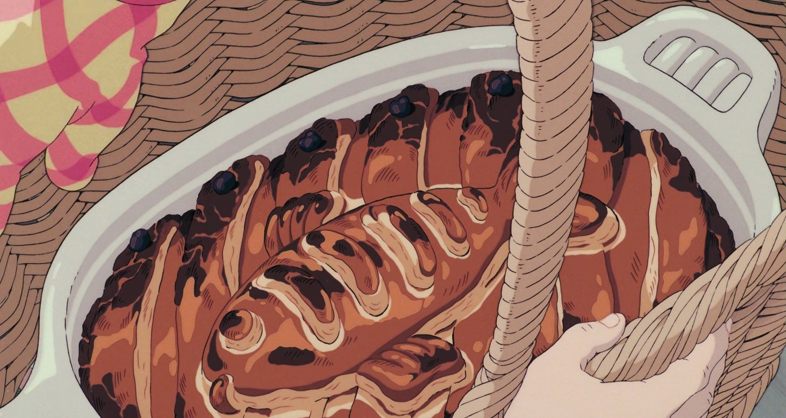

Herring Pie from Kiki's Delivery Service

Ingredients
-
Pie
- Half an onion
- Half a kabocha
- 1 can of herring
- 1 tbsp olive oil
- 1-2 sheets of puff pastry
- Black olives
- Salt and pepper seasoning
- White cheese
-
Bachamel Sauce
- 2 tbsp butter
- 2 tbsp flour
- 425ml hot milk
- Salt and pepper seasoning
-
Egg Wash
Instructions
- Scoop out the seeds from the kabocha.
- Cut the kabocha into smaller pieces.
- Steam the kabocha for around 15 minutes until softened.
- Remove the skin from the kabocha and place the pieces into a bowl.
- Heat oil inside a medium sized pan.
- Finely chop onion and add to pan. Cook until translucent.
- Add the cooked onion to the kabocha and mix into a thick paste.
- To make the bechamel sauce:
- In a small saucepan, heat the butter on a low to medium heat.
- Once melted, whisk in 2 tbsp flour until it bubbles.
- Pour on the hot milk and continue to whisk the mixture
- Add salt and pepper seasoning to taste and whisk until the sauce thickens.
- Add the bechamel sauce to the kabocha mixture in the bowl. Mix until creamy
- Add salt and pepper seasoning to taste.
- Transfer the mixture into a casserole dish.
- Open the can of herring and place on top of the kabocha mixture.
- Grate white cheese onto the top of the herring.
- Prep a sheet of puff pastry dough.
- Place a thin sheet of puff pastry dough to cover the top of the casserole dish.
- Using another sheet of puff pastry dough, cut the fish design and place it in the centre of the casserole.
- Mix your egg wash ingredients. Put the egg wash onto the dough, making sure not to make any pools of wash liquid.
- Cut olives and place them around the edge of the dish.
- Preheat the oven to 190 degrees Celsius.
- Bake the pie for 25-30 minutes.
- Serve the pie and enjoy!